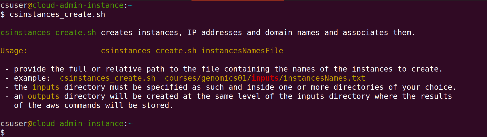
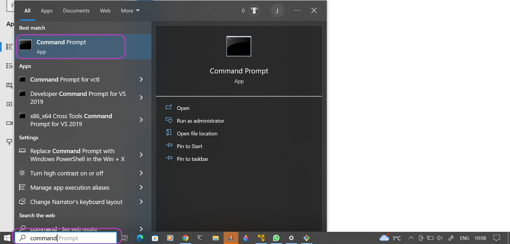
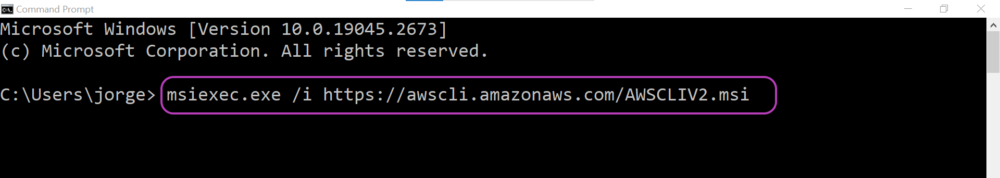
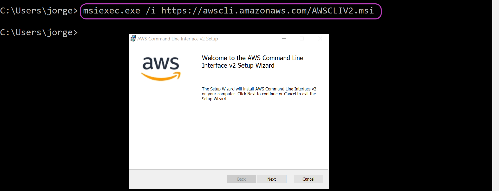

Configure Your Terminal Environment
Please read Workshops Organisation if you haven’t done so. To complete this episode you will need:
- if you are self-studying the course or attending a workshop using your AWS account:
- to have created and configured your AWS account as described in the two previous episodes: Create Your AWS Account and Configure Your AWS Account.
- your AWS account programmatic access credentials (*):
- Access Key ID
- Secret Access Key
- Windows users: to have installed Git Bash — see the Setup section.
- Mac users: to have installed or updated Bash — see the Setup section.
- Mac and Linux users: to have installed:
git,curl,unzip,ssh
- if you are attending a workshop using a Cloud-SPAN AWS account (and an AWS Linux instance):
- to follow the instructions in this episode for Linux terminals.
- Windows users: to have installed Git Bash — see Workshops Organisation and the Setup section.
(*) Those credentials are in the .csv file you downloaded once you created your IAM account as part of configuring your AWS account.
Introduction
This episode will guide you to configure your terminal environment so that you can run the Scripts to create and manage instances.
Configuring your terminal environment consists of:
- installing the Scripts
- installing and configuring the AWS CLI to use your AWS account.
Installing the Scripts and the AWS CLI includes downloading each and configuring the execution path of your terminal so that the Scripts and the AWS CLI can be run from any directory location only specifying their name.
These are the main steps you will follow to configure your Linux machine:
Installing the Scripts
You will download the Scripts from GitHub and make them accessible through the execution path in your Linux machine.Install the AWS CLI
You will download the AWS CLI and make it accessible through the execution path in your Linux machine.Configure the AWS CLI
You will configure the AWS CLI to use the access key ID and a secret access key of your AWS IAM user account.
1. Installing the Scripts
Download the Scripts from GitHub
To download the Scripts, open your (Git Bash, Linux or Mac) terminal and enter or copy-paste the git command below:
Code
git clone https://github.com/Cloud-SPAN/aws-instances.git ~/_tmp_cloudspan_awsMake the Scripts accessible through the execution path
There are many ways to make the Scripts accessible through the execution path. To avoid any conflicts with the current configuration of your Linux machine, we are going to:
- create a new “bin” directory
- copy the Scripts to the new bin directory
- add the new bin directory to the execution path
You can copy-paste the commands below to carry out those three steps using ~/.local/bincsaws as the new bin directory, but note:
If ~/.local/bincsaws already exists in your environment (which you can check with the command ls ~/.local), choose another name for bincsaws and use the new name instead of bincsaws in the three commands below:
Click the bar that corresponds to your terminal to display the next command you will type or copy-paste into your terminal:
Code
echo "PATH=\"\$HOME/.local/bincsaws:\$PATH\"" >> ~/.bashrcCode
echo "PATH=\"\$HOME/.local/bincsaws:\$PATH\"" >> ~/.bash_profileCode
echo "PATH=\"\$HOME/.local/bincsaws:\$PATH\"" >> ~/.zshrcThe last command echo "PATH=\"\$HOME ... adds an assignment shell statement at the end of your terminal shell configuration file (either ~/.bashrc or ~/.bash_profile or ~/.zshrc depending on your terminal).
The statement adds the new bin directory to the execution path which is held by the shell variable PATH.
Since the terminal runs the commands in that configuration file every time it is launched, that is, every time your login to your instance, the assigment shell statement (we added) will add the “new” bin directory to the execution path on every subsequent launch of the terminal, thus making the Scripts accessible from any directory location.
You need to open (launch) a new terminal for the execution path to get updated (you can close the old terminal as you won’t use it anymore).
Once you have opened a new terminal, the Scripts will be accessible through the execution path and you should be able to run the command csinstances_create.sh as shown below. This script is one of the Scripts installed in ~/.local/bincsaws.
Code
$ csinstances_create.shThe output of csinstances_create.sh in your terminal should look like this:

The script csinstances_create.sh was found and run, but as it requires a parameter (the name of a file), it only displayed the usage message and finished.
~/_tmp_cloudspan_aws where the Scripts were downloaded
Please don’t delete that directory just yet. We will use some files there in in the next lesson. Once we use those files you can delete that directory.
2. Install the AWS CLI
To install the AWS CLI in your Linux computer:
- if you installed the Scripts in the suggested directory
~/.local/bincsaws, follow the instructions under “Automatic installation”. - if you installed the Scripts somewhere else, follow the instructions under “Tailored automatic installation”.
The script aws_cli_install_update_linux.sh is one of the Scripts that you installed in the previous section. It installs or updates the AWS CLI in the directory ~/.local/bincsaws. Open a terminal and enter its name and press y when prompted as to whether to continue, as shown below:
Code
aws_cli_install_update.sh
aws_cli_install_update.sh installs or updates the AWS CLI and the AWS completer locally.
Do you want to continue (y/n)?: Once the script is finished, go to section 3 to configure the AWS CLI.
The script aws_cli_install_update_linux.sh is one of the Scripts that you installed in the previous section. It installs or updates the AWS CLI in the directory ~/.local/bincsaws.
Tailor the script aws_cli_install_update_linux.sh
You are going to edit aws_cli_install_update_linux.sh so that it will install the AWS CLI in the directory where you install the Scripts in the previous section. You need to edit only two lines: replacing .local/bincsaws with the name of the directory where you installed the Scripts. Open aws_cli_install_update_linux.sh with your preferred text editor. The lines you need to edit are 33 and 34 and are shown below:
Code
./aws/install --bin-dir $HOME/.local/bincsaws --install-dir $HOME/.local/bincsaws/aws-cli2 --update
echo "complete -C $HOME/.local/bincsaws/aws_completer aws" >> ~/.bashrcThe first line (33) requires two replacements and the second line one replacement. Assuming you installed the Scripts in the directory MYDIRECTORY, those lines should now look like this:
Code
./aws/install --bin-dir $HOME/MYDIRECTORY --install-dir $HOME/MYDIRECTORY/aws-cli2 --update
echo "complete -C $HOME/MYDIRECTORY/aws_completer aws" >> ~/.bashrcInstall the AWS CLI
Now open a terminal and run aws_cli_install_update_linux.sh to install the AWS CLI. Press y when prompted as to whether to continue:
Code
aws_cli_install_update.sh
aws_cli_install_update.sh installs or updates the AWS CLI and the AWS completer locally.
Do you want to continue (y/n)?: Once the script is finished, go to section 3 to configure the AWS CLI.
To install the AWS CLI in your Mac computer, enter or copy-paste the brew command below in your terminal (the Setup section shows how to install brew if you need to):
Code
brew install awscliYou will see an output like the following:
Output
==> Fetching dependencies for awscli: mpdecimal, readline, sqlite, xz, python@3.11, docutils and six
==> Fetching mpdecimal
==> Downloading https://ghcr.io/v2/homebrew/core/mpdecimal/manifests/2.5.1
######################################################################## 100.0%
==> Downloading https://ghcr.io/v2/homebrew/core/mpdecimal/blobs/> sha256:73e9acc9ca851c0d7fb92fdb223bf6359
==> Downloading from https://pkg-containers.githubusercontent.com/ghcr1/blobs/sha256:73e9acc9ca851c0d7fb9
######################################################################## 100.0%
==> Fetching readline
==> Downloading https://ghcr.io/v2/homebrew/core/readline/manifests/8.2.1
######################################################################## 100.0%
==> Pouring six--1.16.0_3.all.bottle.tar.gz
🍺 /usr/local/Cellar/six/1.16.0_3: 20 files, 122.4KB
==> Installing awscli
==> Pouring awscli--2.11.0.monterey.bottle.tar.gz
==> Caveats
The "examples" directory has been installed to:
/usr/local/share/awscli/examples
zsh completions and functions have been installed to:
/usr/local/share/zsh/site-functions
==> Summary
🍺 /usr/local/Cellar/awscli/2.11.0: 13,226 files, 116.5MB
==> Running `brew cleanup awscli`...
Disable this behaviour by setting HOMEBREW_NO_INSTALL_CLEANUP.
Hide these hints with HOMEBREW_NO_ENV_HINTS (see `man brew`).
==> Caveats
==> awscli
The "examples" directory has been installed to:
/usr/local/share/awscli/examples
zsh completions and functions have been installed to:
/usr/local/share/zsh/site-functionsOnce the install is finished, go to section 3 to configure the AWS CLI.
To install the AWS CLI in your Windows computer, you need to use the Windows “terminal” program called Command Prompt as described below. Once the installation is complete, the AWS CLI will be available to the Git Bash terminal. ### Open Windows Command Prompt Go to the Windows search box (bottom left in the screenshot below) and type the word “command” in it. A window will pop up on the left, listing Command Prompt app at the top. Click on Command Prompt app.

Launch the installation of the AWS CLI
You will now be presented with the Command Prompt terminal, shown below. In it, type or copy-paste the following command and press Enter to launch the installation of the AWS CLI:
Code
msiexec.exe /i https://awscli.amazonaws.com/AWSCLIV2.msi
Complete the installation of the AWS CLI
A series of windows will pop up once you launch the installation. The heading of each window is listed below in italics and in bold what you need to click, check or select on each window (only the first window in the list is shown below):
- Welcome to the AWS Command Line Interface v2 Setup Wizard
- click Next
- End-User License Agreement
- check the box for I accept the terms in the Licence Agreement
- click Next
- Custom Setup
- click Next (change nothing)
- Ready to install AWS Command Line Interface v2
- click Install
- Installing AWS Command Line Interface v2
- Do you want to allow this app to make changes to your device?
- click Yes
- Completed the AWS Command Line Interface v2 Setup Wizard
- click Finish

Go to section 3 to configure the AWS CLI. You can use both the Command Prompt terminal or the Git Bash terminal to configure the AWS CLI. We used the Git Bash terminal.
3. Configure the AWS CLI
The installation of the AWS CLI, as instructed in the previous section, is made local (within your HOME directory) on Linux, and system-wide (for all users) on Mac and Windows. Hence, Mac and Windows users may need to open a new terminal so that the execution path gets updated with the location where the AWS CLI was installed. Otherwise you may see the message aws: command not found when trying to configure the AWS CLI whose name as a program is aws.
To configure the AWS CLI, run the command aws configure as shown below, entering the following information when prompted:
- the access key ID and the secret access key associated with your IAM user account
- for default region name, enter
eu-west-1(Ireland) - for default output format, enter:
json
Code
aws configureOutput
AWS Access Key ID [None]: AVQN34BMZ4ADSXUFIAKI ### YOURS
AWS Secret Access Key [None]: XZVbQgWJeOVY43V2UdmrUkqIVo0/bSO3gtc4E3Lx ### YOURS
Default region name [None]: eu-west-1
Default output format [None]: jsonCheck the AWS CLI configuration
To check the configuration of the AWS CLI, run the following command:
Code
$ aws ec2 get-vpn-connection-device-typesIf your configuration is correct, you should see an output like this:
Output
{
"VpnConnectionDeviceTypes": [
{
"VpnConnectionDeviceTypeId": "36ef5d04",
"Vendor": "Barracuda",
"Platform": "NextGen Firewall F-Series",
"Software": "6.2+"
},
...Your machine environment is now configured to use the Scripts in the next lesson: Managing AWS Instances.
If instead you see an authorisation failure message like the one below, your configuration of AWS CLI is not right. Run aws configure again and check that you properly copy-paste your keys and other information.
Output
An error occurred (AuthFailure) when calling the GetVpnConnectionDeviceTypes operation: AWS was not able to validate the provided access credentials